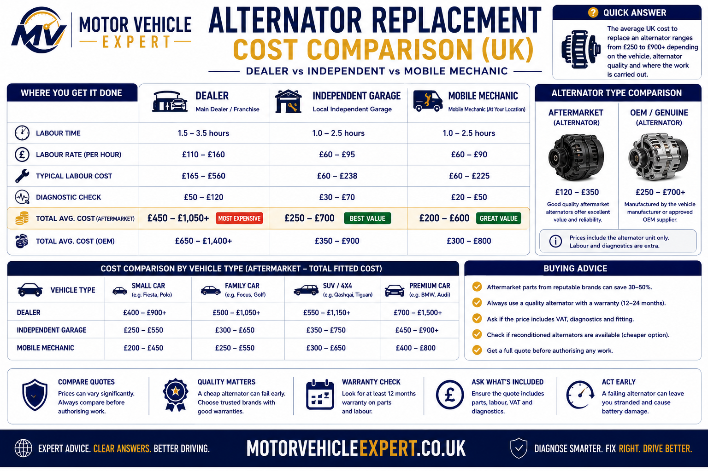
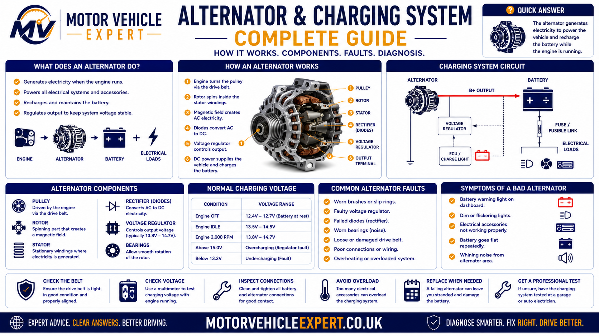
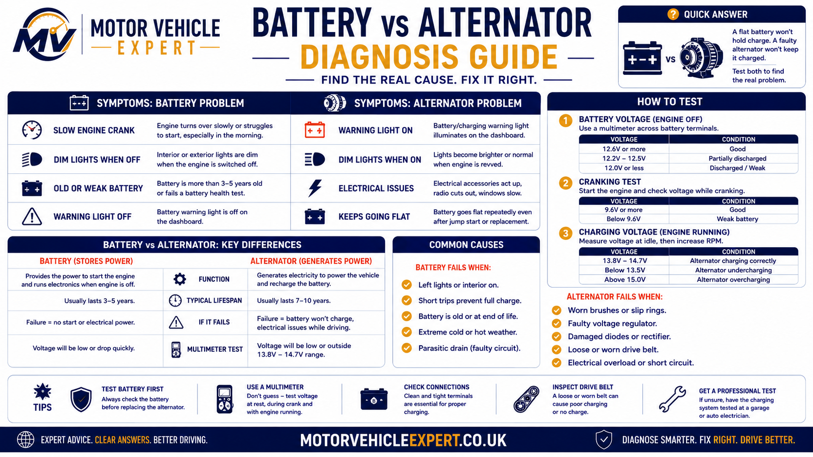
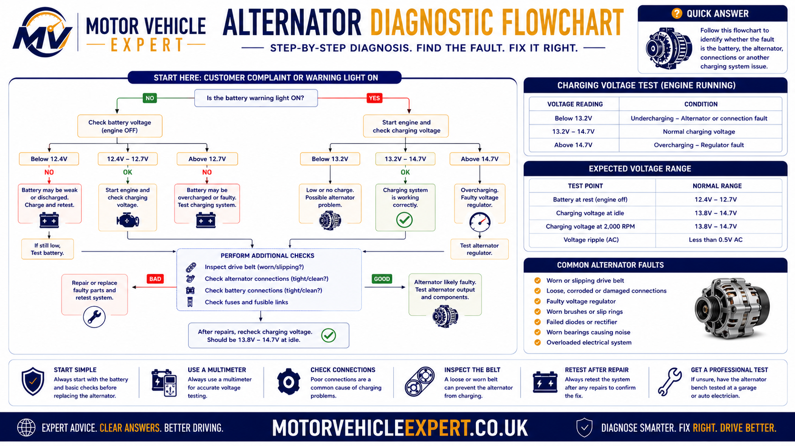

How Much Does Alternator Replacement Cost in the UK?
For most UK motorists, alternator replacement is a £250–£800 fitted repair. The exact amount depends on the replacement unit, fitting time and whether another charging-system fault also requires repair.
Typical Fitted Cost
£250–£800Covers many mainstream UK vehicles. Difficult-access and premium applications can exceed this range.
Alternator Price
£150–£500+Genuine, aftermarket and professionally reconditioned units can have very different purchase prices and warranty terms.
Typical Labour
£150–£300Many replacements take around one to three hours, with difficult engine-bay access increasing the labour requirement.
A higher quotation is not automatically excessive. High-output alternators, premium parts, restricted access, smart charging and confirmed related repairs can legitimately push the total towards £1,000 or more. The important question is what explains the additional cost.
Check whether the figure includes the correct alternator, fitting, VAT, diagnosis, warranty and any exchange surcharge. Also establish whether the quoted unit is new genuine, new aftermarket or reconditioned.
Before authorising replacement, ask what test confirmed that the alternator itself cannot meet the vehicle's charging requirement. Battery condition, belt drive, wiring, earth connections and charging control can all create similar symptoms.
How Much Does Alternator Replacement Cost for Different Cars?
The headline £250–£800 fitted range is useful for initial planning, but the exact vehicle matters much more when comparing a real garage quote. Alternator output, engine-bay access, auxiliary-drive design and charging-system technology can change both the part price and the fitting time substantially.
The ranges below therefore move beyond the Quick Answer and show how vehicle type and repair complexity can change the final fitted price.
City Car / Small Hatchback
£250–£400More achievable where a conventional alternator is readily available and removal does not require major dismantling.
Family Hatchback / Saloon
£350–£550Typical modern petrol or diesel applications with moderate access and a correctly specified quality replacement unit.
SUV / Larger Diesel
£450–£750Higher electrical demand, larger alternators, overrunning pulleys and restricted engine-bay access can increase the bill.
Executive / Premium Vehicle
£600–£900Higher-specification alternators, more sophisticated charging strategies and extra dismantling can push costs above the mainstream range.
Luxury / Performance Vehicle
£800–£1,200+Premium parts, high electrical demand and difficult alternator access can combine to create a four-figure replacement bill.
Stop-Start / Smart Charging
Specification MattersSmart charging does not automatically make every replacement expensive, but the correct alternator specification and diagnostic procedure become particularly important.
Two cars with similar engine capacities can use different alternators, pulley systems and charging strategies. When comparing quotes, make sure each garage has priced the exact vehicle and not merely a generic alternator for the model range.
Alternator Replacement Cost Comparison by Vehicle Type
The existing Motor Vehicle Expert comparison diagram gives a quick visual explanation of why alternator replacement does not have one universal fitted price.

| Vehicle Type | Typical Fitted Cost | Typical Access | Main Cost Drivers |
|---|---|---|---|
| Small city car | £250–£400 | Often straightforward | Conventional unit and relatively simple access |
| Family hatchback / saloon | £350–£550 | Moderate | Modern alternator specification and normal dismantling |
| SUV / larger diesel | £450–£750 | Moderate to difficult | Higher output, pulley design and more restricted access |
| Executive / premium | £600–£900 | Often more involved | Higher-specification charging system and additional dismantling |
| Luxury / performance | £800–£1,200+ | Potentially difficult | Premium high-output parts and extensive engine-bay access work |
A vehicle can legitimately fall outside these ranges. The useful question is whether its alternator specification, labour access and confirmed additional repairs explain the difference.
How Much Is the Alternator and How Much Is the Labour?
Separating the replacement unit from the fitting charge makes alternator quotes much easier to compare. The cheapest alternator does not always produce the cheapest complete repair, particularly when labour access is difficult or warranty cover is weak.
Alternator Unit
£150–£500+Price varies according to output rating, application, manufacturer, whether the unit is new or reconditioned and the warranty supplied.
Typical Labour
£150–£300Many replacements require around one to three hours of labour, while difficult-access applications can require considerably more work.
Charging-System Diagnosis
£40–£120Diagnostic time may include battery testing, charging output, voltage-drop checks, belt inspection and electronic charging analysis.
A parts-only price may exclude fitting, VAT, diagnosis, warranty handling, an exchange surcharge and any additional repair required to the charging or belt-drive system.
Proper testing may show that the alternator is healthy and the actual problem lies with the battery, belt drive, charging cable, earth connection or control system.
What Makes One Alternator Replacement More Expensive Than Another?
Alternator cost is determined by more than the physical size of the unit. The most important variables are the vehicle specification, charging-system design, replacement-part quality and labour required to reach the alternator.
Make, Model & Engine
Different versions of the same model can use different alternator outputs, mounting arrangements and pulley designs.
Alternator Output
Vehicles with greater electrical demand often require higher-output alternators that cost more than simpler lower-output units.
Smart Charging
Electronically controlled charging systems can require a more specific alternator and more careful diagnosis than older conventional systems.
Engine-Bay Access
Undertrays, intake components, cooling-system parts or engine mountings may need removing before the alternator can be reached.
Genuine vs Aftermarket
Genuine, new aftermarket and professionally reconditioned units can differ significantly in purchase price and warranty protection.
Belt Drive or Wiring
A worn belt, faulty pulley, damaged charging cable or weak battery can increase the invoice when the additional fault is properly confirmed.
If alternator access requires several hours of dismantling, choosing an extremely cheap replacement with poor warranty protection can create greater financial risk because the same labour may need paying again if the unit fails.
Why Is My Alternator Replacement Quote So Expensive?
A high quote is not automatically unreasonable, and a low quote is not automatically good value. The quotation should make sense when you break it into diagnosis, replacement unit, labour and genuinely necessary additional work.
| Quote Item | Why It Adds Cost | What to Ask |
|---|---|---|
| High-output alternator | The replacement unit itself can be substantially more expensive. | Is this the correct output specification for my exact vehicle? |
| Several hours of labour | Restricted access may require significant dismantling. | What components have to be removed to reach the alternator? |
| Genuine / OE-quality unit | Higher parts cost than some aftermarket or rebuilt alternatives. | What manufacturer, specification and warranty am I receiving? |
| Smart-charging specification | More specific alternator and diagnostic requirements. | Is the quoted unit correct for this vehicle's charging strategy? |
| Diagnostic charge | Covers the time required to prove the charging-system fault. | What tests demonstrated that the alternator itself is faulty? |
| Auxiliary belt | Adds a related part and potentially additional fitting time. | What wear, contamination or damage justifies replacement? |
| Tensioner or pulley | Adds another belt-drive component to the repair. | Was poor tension, seizure, noise or excessive movement confirmed? |
| Replacement battery | Can add a significant additional parts cost. | Did the battery fail a proper health or capacity test? |
| Cable or earth repair | High resistance can reduce charging performance. | What circuit or voltage-drop test identified the problem? |
A higher quote that includes proper diagnosis, the correct-quality alternator and meaningful warranty cover can represent better value than a cheaper repair using an unknown unit with limited protection.
A new alternator does not automatically mean the battery, auxiliary belt, tensioner and pulley all need replacing. Each recommendation should be supported by inspection or testing.
What Other Costs Can Be Added to Alternator Replacement?
Some alternator faults are isolated. Others occur alongside belt-drive, battery or charging-circuit problems. These figures help you budget for additional work where the extra fault has actually been confirmed.
Auxiliary Belt
£40–£120Consider replacement when inspection shows cracking, glazing, contamination, damage or significant wear.
Belt Tensioner
£120–£300May be required where poor tension, seizure, bearing noise or excessive movement is confirmed.
Overrunning Pulley
£120–£280Particularly relevant on many diesel applications where pulley failure can create belt vibration, noise or unstable tension.
Replacement Battery
£90–£300+Replacement should follow a failed battery assessment rather than being added automatically after alternator failure.
Charging Cable / Earth Repair
£60–£250+Corrosion, heat damage or excessive resistance can restrict charging current even when the alternator itself is capable of working correctly.
Charging-System Testing
£40–£120Can include battery assessment, charging output, ripple, voltage drop, belt inspection and charging-control checks.
| Additional Repair | Planning Cost | Evidence That May Justify It |
|---|---|---|
| Auxiliary belt | £40–£120 | Cracking, glazing, contamination, damage or significant wear |
| Belt tensioner | £120–£300 | Poor tension, seizure, noise or excessive movement |
| Overrunning pulley | £120–£280 | Seizure, noise or abnormal belt movement |
| Battery | £90–£300+ | Failed condition, capacity or health test |
| Charging cable / earth | £60–£250+ | Corrosion, overheating or excessive voltage drop |
| Diagnosis | £40–£120 | Needed to determine which part of the charging system has failed |
The battery, belt, tensioner, pulley and charging cables should be assessed individually. Replace additional components because evidence shows they are faulty or worn—not simply because access is already available.
Should You Buy a New, Aftermarket or Reconditioned Alternator?
The correct replacement choice is not necessarily the most expensive or the cheapest. It should match the vehicle's electrical specification, expected ownership period, repair budget and the quality of warranty cover.
New Genuine / OE
£300–£800+Generally offers strong specification confidence and established parts support, but usually has the highest purchase price.
New Aftermarket
£180–£550+Can offer good value when the manufacturer is reputable, the output specification is correct and the warranty is meaningful.
Professionally Reconditioned
£120–£400+Can make financial sense on an older vehicle where the rebuild quality, correct specification and warranty are all satisfactory.
| Replacement Type | Main Strength | Main Consideration | Often Makes Sense When |
|---|---|---|---|
| New genuine / OE | Strong specification confidence | Higher initial parts cost | Vehicle is newer, premium or being kept long term |
| New aftermarket | Useful balance of price and new-unit warranty | Quality varies between manufacturers | A reputable correctly specified unit is available |
| Reconditioned | Lower purchase cost | Rebuild quality and warranty are crucial | Older vehicle needs an economical but properly supported repair |
If an alternator is difficult to access, removal and refitting can form a large part of the total repair cost. Ask what happens to the labour charge if the replacement unit fails during its warranty period.
Paying several hours of labour to install the cheapest available unit can be poor value. Equally, fitting the most expensive genuine unit to an older low-value car is not automatically the best financial decision. Balance specification, quality, warranty and intended ownership.
What Symptoms Suggest an Alternator or Charging-System Fault?
Alternator faults can produce obvious electrical symptoms, but symptoms alone should not be used to authorise replacement. A weak battery, poor charging cable, damaged earth connection, slipping auxiliary belt, faulty tensioner or charging-control problem can produce very similar behaviour.
The useful diagnostic question is not simply “does this look like an alternator fault?”. It is “which test should separate the alternator from the other parts of the charging system?”
Battery Warning Light
A battery or charging-system warning that remains illuminated with the engine running tells you the charging system needs attention. It does not identify the failed component on its own.
Battery Keeps Going Flat
A battery may accept an external charge and start the engine normally, then become discharged again because the vehicle is not replenishing the energy used during driving.
Dim or Flickering Lights
Headlamps, dashboard illumination and interior lighting can become dim or unstable when charging-system voltage falls or varies abnormally.
Slow Cranking
Slow cranking can occur after the battery has gradually lost charge, but a weak or internally damaged battery can produce the same symptom.
Several Warning Lights Appear
Falling electrical-system voltage can cause control modules to report apparently unrelated ABS, ESC, steering or engine-management warnings.
Engine Cuts Out
If charging output is lost, the vehicle can continue temporarily from stored battery energy before voltage falls too low for essential engine systems to operate.
Whining, Chirping or Rattling
Noise around the alternator can come from an internal bearing, auxiliary belt, tensioner or overrunning pulley. The alternator's electrical section may not be the original cause.
Burning Smell
A slipping belt, overheated cable, seized pulley or internal electrical fault can produce a hot rubber or electrical smell and deserves prompt investigation.
Symptoms Worsen Under Load
Charging weakness can become more obvious when headlights, heated screens, blowers and other high-current equipment are switched on.
Warning lamps, dim lights and repeated battery discharge tell us where diagnosis should begin. They do not prove that a £250–£800 alternator replacement is the correct repair.
If the vehicle starts after a jump and then continues running normally, battery condition becomes particularly important. If it starts and later cuts out again as stored battery energy falls, a charging-system fault becomes more likely. Testing is still required in both cases.
How Does the Alternator Work With the Battery and Charging System?
The alternator is only one part of the vehicle's charging system. Reliable charging depends on the battery, auxiliary drive, alternator, regulator, positive charging circuit, earth return and vehicle electronics working together.
Understanding that complete path is important because a healthy alternator can appear ineffective when its mechanical drive or electrical connection to the battery is faulty.

Battery Supplies Starting Power
Before the engine starts, the battery supplies electrical power to the starter motor and essential control systems.
Engine Drives the Alternator
Once the engine runs, the crankshaft drives the auxiliary belt and rotates the alternator pulley.
Alternator Produces Electrical Energy
Mechanical rotation is converted into electrical power that can support the vehicle's electrical demand and recharge the battery.
Output Is Regulated
Charging output is controlled so the electrical system receives the required supply without uncontrolled overcharging.
Vehicle Loads Consume Power
Lighting, blowers, heating elements, pumps, steering systems and electronic modules consume alternator output while the engine runs.
Battery Is Replenished
Available charging capacity restores energy used during starting and helps keep the battery ready for the next engine start.
On many modern vehicles the charging strategy changes alternator output according to battery condition, electrical demand and operating conditions. One isolated voltage measurement should therefore not be treated as universal proof of alternator condition.
Excessive resistance in the positive cable or earth-return path can create a significant voltage drop. The alternator may generate power correctly while the battery still receives an inadequate charging supply.
Is the Battery Faulty or Does the Alternator Need Replacing?
Battery and charging faults overlap heavily. Slow cranking, warning lamps, repeated discharge and weak electrical performance can occur with either problem.
The useful distinction comes from combining how the fault behaves with what the electrical tests prove.

Evidence Pointing Towards the Battery
- Engine cranks slowly after the vehicle has been parked
- Vehicle starts after a jump and continues running normally
- Battery fails a condition or capacity assessment
- Charging output is appropriate while the engine is running
- Battery voltage drops excessively during cranking
Evidence Pointing Towards the Alternator
- Charging warning remains illuminated with the engine running
- Vehicle starts after a jump but later cuts out again
- Alternator output remains below the required specification
- Electrical systems weaken as battery charge is depleted
- Ripple, regulator, diode or output testing confirms an internal fault
A prolonged charging fault can repeatedly deep-discharge and damage the battery, meaning both components may eventually require attention. Equally, a weak battery can place high demand on an otherwise functioning charging system. Test both before deciding what to replace.
Alternator Not Charging?
Check Battery Health
Warning Still On?
How Should an Alternator Be Diagnosed Before Replacement?
Before approving a replacement costing several hundred pounds, there should be evidence that the complete charging system has been checked in a logical order.
The aim is to prove not only that charging performance is wrong, but why it is wrong.

Battery Condition
Confirm state of charge, battery health and cranking performance so a weak battery does not distort the charging diagnosis.
Charging Voltage
Measure system voltage with the engine running and interpret the result according to the vehicle's actual charging strategy.
Charging Current
Establish whether the alternator can support electrical demand and replenish the battery under suitable test conditions.
Belt, Tensioner & Pulley
Check belt condition, tension, pulley operation and mechanical movement so a drive fault is not mistaken for an internal alternator problem.
Voltage-Drop Testing
Measure the positive charging path and earth return under load to identify excessive resistance between the alternator and battery.
Electronic Charging Control
On controlled charging systems, inspect relevant fault information, command data and regulator behaviour before blaming the alternator.
Depending on the vehicle and symptoms, a proper diagnosis may also need charging-current measurement, alternator ripple assessment, battery testing, voltage-drop checks and electronic control data.
By the end of the test process, the technician should be able to explain whether the fault lies inside the alternator or elsewhere in the battery, drive system, wiring or charging control.
What Evidence Should Exist Before You Approve Alternator Replacement?
This is the final step between diagnosis and spending the money. A good replacement recommendation should show why the alternator itself has failed and why another fault does not better explain the charging problem.
Evidence the Alternator Is Faulty
- Battery condition is suitable for a meaningful charging test
- Auxiliary drive is turning the alternator correctly
- Charging cables and earth paths do not show excessive resistance
- Alternator output remains inadequate under correct test conditions
- Ripple, diode, regulator or internal testing identifies a fault
- Test results and vehicle symptoms support the same diagnosis
Evidence Another Fault May Be Responsible
- Battery fails its condition or capacity assessment
- Auxiliary belt slips or fails to drive the alternator correctly
- Tensioner or overrunning pulley is seized, weak or unstable
- Charging cable or earth circuit shows excessive voltage drop
- Alternator output is correct but the battery continues to discharge
- Electronic charging commands or control inputs are incorrect
The warning confirms that the charging system requires attention. Before approving an alternator, ask what test specifically demonstrated that the unit itself cannot meet the vehicle's charging requirement.
Once the failed component is proven, the repair estimate becomes much clearer: correct replacement unit, realistic labour time, appropriate warranty and only those additional parts supported by evidence.
What Should You Check Before Approving an Alternator Quote?
Once diagnosis has confirmed that the alternator itself needs replacing, the next decision is whether the quotation represents the correct repair at a sensible total price.
A useful quotation should identify the replacement unit, fitting labour, warranty and any additional work clearly enough for you to understand exactly what you are paying for.
What Proved the Alternator Failed?
The garage should be able to explain what charging-system evidence showed that the alternator itself requires replacement.
What Alternator Is Being Supplied?
Confirm whether the quoted unit is genuine, aftermarket or reconditioned and that its electrical specification matches the vehicle.
How Much Fitting Time Is Included?
Ask how many labour hours have been allowed and whether access requires significant dismantling before the alternator can be removed.
Does the Quote Include VAT?
Make sure the figure you are comparing is the expected complete fitted price rather than a parts-only or pre-VAT headline figure.
What Happens if the Unit Fails?
Check the warranty period, any conditions and whether cover applies only to the replacement unit or also helps with repeat removal and fitting.
Why Are Extra Parts Being Added?
Battery, belt, tensioner, pulley and wiring repairs should each have a clear inspection or test result supporting their replacement.
| Check | What You Want to Know | Why It Matters |
|---|---|---|
| Fault confirmation | What test proved the alternator failed? | Protects against unnecessary replacement |
| Alternator type | Genuine, aftermarket or reconditioned? | Helps explain price, expected quality and warranty |
| Electrical specification | Is it correct for the exact vehicle? | Avoids an incorrectly specified replacement |
| Parts cost | What portion of the bill is the alternator itself? | Makes alternative quotes easier to compare |
| Labour | How many fitting hours are included? | Explains difficult-access or premium-vehicle costs |
| VAT | Is it included in the total? | Prevents a surprise increase in the final invoice |
| Warranty | What parts and labour protection is provided? | Important if the replacement fails prematurely |
| Additional repairs | What evidence supports each extra item? | Prevents unrelated or automatic parts replacement |
Two garages can quote very different prices because one includes proper diagnosis, a higher-quality replacement and stronger warranty while the other supplies a cheaper unit with minimal additional protection. Compare what is actually included, not only the bottom-line figure.
Can You Drive With a Faulty Alternator?
A car with little or no charging output may continue running temporarily using energy stored in the battery, but there is no dependable number of miles or minutes that the vehicle will continue to operate.
Remaining driving time depends on battery condition, state of charge and how much electrical power the vehicle is consuming.
Battery Light Appears
Treat the warning as a charging-system problem that needs prompt investigation rather than assuming the vehicle can continue normally.
Electrical Systems Weaken
Dimming lights, slow electrical operation and several warning lamps together can indicate that stored battery energy is being depleted.
Engine Can Stop
Once voltage falls below the level required by essential engine systems, the engine can cut out and may not restart.
Severe headlamp dimming, several warnings appearing together, loss of electrically assisted functions, engine misbehaviour, a burning smell or the engine beginning to cut out are strong reasons to stop safely and arrange recovery.
If the auxiliary belt is damaged, loose or making severe mechanical noise, investigate promptly. On some engines the auxiliary drive operates other important components as well as the alternator.
Should You Replace an Alternator Yourself or Use a Garage?
Alternator replacement ranges from relatively straightforward on some older vehicles to highly involved on modern cars with restricted access and electronically controlled charging.
The decision should depend on diagnostic certainty, safe electrical working, belt-drive knowledge and physical access, not simply whether the alternator appears easy to unbolt.
Straightforward Vehicle
- Charging fault has already been properly confirmed
- Alternator is readily accessible
- Correct replacement specification is known
- Belt routing and tensioning are understood
- Safe battery-isolation procedures and suitable tools are available
Complex Modern Vehicle
- Significant dismantling is required
- High-current wiring needs testing or repair
- Smart charging or electronic control is involved
- Belt tensioner or pulley condition is uncertain
- The original charging fault has not been proved
Incorrect battery isolation or accidental short circuits can damage wiring and vehicle electronics. If you are not confident working safely around the battery, alternator connections and auxiliary drive, garage replacement is the better option.
A perfectly fitted new alternator will not solve the vehicle if the original problem is actually the battery, belt drive, charging cable, earth connection or charging-control system.
Will a Faulty Alternator Fail an MOT?
The alternator is not normally inspected as a standalone MOT test item. The MOT instead assesses specific testable components and systems, including relevant lighting, warning devices, electrical wiring and other equipment covered by the inspection manual.
A severe charging fault can still create practical MOT problems if low system voltage affects equipment that is tested or leaves the vehicle unable to operate reliably during the inspection.
Low Voltage Can Affect Lamps
A charging problem can contribute to poor electrical performance and faults in mandatory lighting or other testable electrical equipment.
Other Warning Lights May Appear
Low system voltage can cause electronically controlled systems to report faults that may have separate MOT implications.
Severe Charging Failure Can Stop the Car
A vehicle that will not start or remain operating reliably can create obvious practical problems before or during an MOT inspection.
There is no simple standalone alternator pass/fail inspection in the way there is for specific testable systems. Repair the fault because the vehicle needs reliable charging and because low voltage can affect other equipment and roadworthiness.
Should You Buy a Used Car With an Alternator or Charging Fault?
A confirmed alternator fault does not automatically make a used car a poor purchase. The important distinction is between a diagnosed repair with a known likely cost and an unexplained electrical problem that the seller simply describes as “probably the alternator”.
“It Only Needs an Alternator”
Ask what test confirmed that claim. Without diagnostic evidence, treat the charging problem as unresolved rather than budgeting only the cheapest possible alternator.
Check for Battery Damage
Repeated deep discharge can weaken the battery, so the total repair exposure can include more than the alternator itself.
Listen for Mechanical Noise
Belt squeal, rattling, tensioner movement or pulley noise can indicate additional drive-system repairs.
Check for Multiple Warnings
Several warnings can appear because of low voltage, but they can also indicate other genuine faults that deserve separate investigation.
Ask What Has Already Been Replaced
A recently fitted battery followed by another charging problem can be a clue that the original fault was never fully diagnosed.
Price the Uncertainty
If the fault is not proven, allow enough financial margin for a wider charging-system repair rather than negotiating only the lowest possible alternator cost.
Before buying, establish whether the issue is a confirmed alternator, battery, belt-drive or wiring fault. If diagnosis is incomplete, include that uncertainty in the purchase decision.
Inspect the Whole Car
Ask Before You Buy
Check Battery Health
Alternator, Battery & Charging-System Guides
Continue with the guide that best matches the actual symptom. These six supporting pages keep alternator replacement cost separate from battery, charging-warning and starting-system diagnosis.
Alternator Not Charging
Use this when the main question is whether the alternator is supplying the battery correctly rather than how much replacement will cost.
Battery Warning Light
Understand what the charging warning means and why it does not prove that the alternator itself has failed.
Battery Light Still On
If the warning remains after fitting a new battery, the charging system still needs proper diagnosis rather than another battery.
Battery Keeps Going Flat
Repeated discharge can come from charging faults, battery condition or electrical drain and should be diagnosed systematically.
Check Battery Health
Battery condition should be established before deciding whether poor starting or repeated discharge is actually an alternator problem.
Starter Motor Replacement Cost
Use this when testing points to the starting circuit or starter motor rather than the charging system.
Alternator Replacement Cost UK FAQs
How much does alternator replacement cost in the UK?
Alternator replacement typically costs around £250–£800 fitted in the UK. Straightforward mainstream cars can be nearer the lower end, while premium vehicles, high-output alternators, difficult access and smart-charging systems can push the total towards £1,000 or more.
How much is an alternator in the UK?
The alternator itself commonly costs around £150–£500 or more before labour. Price depends on the vehicle, electrical output, whether the unit is genuine, aftermarket or reconditioned, and whether an exchange surcharge applies.
How much does alternator fitting cost?
Alternator fitting labour commonly costs around £150–£300 in the UK, although difficult-access vehicles can cost more. Many replacements take roughly one to three hours, while extensive dismantling can increase the labour time significantly.
Why is alternator replacement so expensive?
The price can rise because of a high-output or electronically controlled alternator, restricted engine access, higher-quality replacement parts and additional work involving the auxiliary belt, tensioner, pulley, battery or charging cables.
How much does an alternator cost for a small car?
A straightforward alternator replacement on a small mainstream car may cost around £250–£400 fitted. The actual price still depends on the alternator specification, labour access, parts quality and whether other charging-system repairs are required.
How much does an alternator cost for a diesel car?
Diesel alternator replacement varies widely, but larger or more complex diesel vehicles commonly sit towards the middle or upper end of typical UK alternator costs. High-output units, overrunning pulleys and restricted access can increase the bill.
How long does alternator replacement take?
Many alternator replacements take around one to three hours. A vehicle with straightforward access may take less time, while an alternator hidden behind other engine components can require several hours of dismantling and refitting.
Is a reconditioned alternator cheaper?
Yes. A professionally reconditioned alternator can cost considerably less than a new genuine unit. The important considerations are rebuild quality, correct electrical specification, supplier reputation and the parts and labour warranty.
Is an aftermarket alternator worth buying?
A good-quality aftermarket alternator can offer a useful balance between price and reliability. Check that the output specification is correct and compare the manufacturer, warranty and labour protection rather than choosing the cheapest unit purely on price.
Does alternator replacement include a new auxiliary belt?
Not necessarily. The auxiliary belt may be quoted separately and should be replaced when inspection shows cracking, glazing, contamination, stretching or other deterioration. It should not be added automatically without a reason.
Should the battery be replaced when the alternator is replaced?
Not automatically. The battery should be tested for condition, capacity and its ability to hold charge. Replacement is justified when testing confirms that repeated discharge, age or internal deterioration has left the battery unserviceable.
Can a bad alternator flatten a new battery?
Yes. If the alternator cannot replenish the electrical energy used by the vehicle, even a new battery can become discharged. Replacing the battery alone will not correct an underlying charging-system fault.
Does a battery warning light mean the alternator needs replacing?
No. The battery warning light indicates a charging-system problem rather than proving that the alternator itself has failed. The battery, alternator output, belt drive, wiring, earth connections and charging control should be checked before replacement is authorised.
Can I drive with a faulty alternator?
A vehicle may continue running temporarily from stored battery energy, but it can stop once voltage falls too low. If lights dim severely, steering assistance is affected, warning lamps multiply, the engine begins cutting out or there is a burning smell, stop safely and arrange recovery.
Can an alternator fail suddenly?
Yes. Internal electrical failure, voltage-regulator faults, diode problems, bearing seizure or drive-system failure can cause charging output to disappear suddenly, although some alternators produce warning symptoms before complete failure.
What should be included in an alternator replacement quote?
A useful quote should identify the alternator specification and whether it is new, aftermarket or reconditioned, plus parts, labour, VAT, diagnostic charges, warranty terms and any additional belt, pulley, tensioner, battery, wiring or adaptation work.
How can I tell whether the battery or alternator is faulty?
Symptoms overlap, so proper testing is more reliable than guessing. Battery condition, cranking performance, charging voltage and current, alternator ripple, belt operation and voltage drop through the charging cables should be checked before deciding which component has failed.
Will a faulty alternator fail an MOT?
The alternator is not normally assessed as a separate MOT test item. However, a severe charging fault can affect testable systems such as lighting, warning lamps or electrically assisted functions, and the vehicle still needs to remain in a condition that allows the inspection to be completed safely.